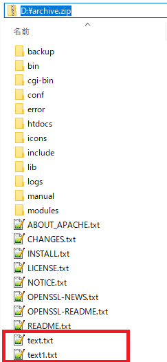
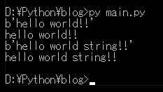

[Python] ファイル圧縮、解凍(zipfile)する方法
こんにちは。明月です。
この投稿はPythonでファイル圧縮、解凍(zipfile)する方法に関する説明です。
プログラムのプロジェクトを開発する時に圧縮ファイルをよく使います。圧縮ファイルの長所はファイルサイズを減らすこともあるし、複数のファイルを一つのファイルで管理するために使う時もあります。
そのため、Pythonに圧縮ファイル(zip)を扱うライブラリがありますが、それがzipfileモジュールです。
link - https://docs.python.org/3/library/zipfile.html
# zipfileモジュール
import zipfile
import os
# 圧縮ファイルを生成するファイルの絶対パス
with zipfile.ZipFile('d:\\archive.zip', 'w') as myZip:
# 圧縮対処パス
des_folder = 'd:\\apache'
# osモジュールで街頭パスのファイルを取得する。(os.walkはパスの派生フォルダまで取得する。)
for folder,subfolders,files in os.walk(des_folder):
# os.walkでファイルリストを受け取ってループを実行する。
for file in files:
# folderとfiles名は他の変数で取得する。二つの変数の値でファイル絶対パスを作る。
full_name = os.path.join(folder, file)
# writeは圧縮ファイルでファイルを書き込む。パラメータは対処ファイル、格納するパスで指定する。
# 圧縮ファイルで格納するパスは「\」基準で相対パスで作成する。
myZip.write(full_name, os.path.relpath(full_name, des_folder))
# 上で生成した圧縮ファイルでファイルを追加する。
with zipfile.ZipFile('d:\\archive.zip', 'a') as myZip:
# workフォルダのhello.txtファイルをrootのtext.txtファイルで格納する。
myZip.write('d:\\work\hello.txt', 'text.txt')
# これはtext1.txtでstring値でファイルを格納する。
myZip.writestr('text1.txt', 'hello world string!!')
まず、zip圧縮ファイルを作成する例です。ZipFileでオプションがあります。
IOと似ているな概念ですが'r','w','a','x'があります。
wとxはファイルを作成するためのオプションですが、wはファイルが存在する場合に削除した後に新しく作成します。xはファイルが存在する場合にFileExistsErrorエラーを発生します。
aの場合は、存在するファイルに追加のファイルを挿入するか、変更するときに使用されます。
rの場合は、zipファイルを読んでオプションです。

結果を見れば、apacheのソースを圧縮しましたが、text.txtファイルとtext1.txtを追加されました。
# zipfileモジュール
import zipfile
# 圧縮ファイルを読みこむファイルの絶対パス。
with zipfile.ZipFile('d:\\archive.zip', 'r') as myZip:
# 圧縮を解凍する時、パスワードが欠けている場合に設定する。(ファイル圧縮する時にはパスワードをかけません。)
# myZip.setpassword(b'1234')
# zipファイルからファイルリストを受け取る。(zipファイル内の絶対パス)
for filename in myZip.namelist():
# text.txtファイルとtext1.txtを読み込む。
if filename == 'text.txt' or filename == 'text1.txt':
# ファイルを読み込む。
with myZip.open(filename) as myfile:
# ファイルを出力する。(byteタイプ)
print(myfile.read())
# 上のopenと処理機能が同じ。(byte)
data = myZip.read(filename)
# byte to string変換
print(data.decode())
# 圧縮を解凍する。
myZip.extract(filename, path='d:\\work\\')
# 全体ファイルを解凍する。
with zipfile.ZipFile('d:\\archive.zip', 'r') as myZip:
# 全体ファイルを解凍するパスを設定
myZip.extractall(path='d:\\work\\extract\\')
上の例は圧縮ファイルを解凍するソースです。まず、zipで必ず解凍しなくてもopenとreadで読み込んでファイルを書き出しができます。
参考で上の例ではzipfile.ZipFileの関数に圧縮ファイルを入れてstreamタイプのデータを読み込んて処理ができます。socket通信間に圧縮送受信する時、ローカルのディスクに圧縮を解凍しなくても圧縮ファイルのデータを読み込まれます。

結果は上のtext.txtファイルとtext1.txtファイルだけ読み込んでコンソール出力しました。結果は「hello world!!」と「hello world string!!」の結果が出ました。
pythonではzipfileモジュールでZipファイル内でファイルを別に削除する機能がないです。解凍して、ファイルを除いて再圧縮することですることしかないです。
ここまでPythonでファイル圧縮、解凍(zipfile)する方法に関する説明でした。
ご不明なところや間違いところがあればコメントしてください。
- [Python] メール(smtplib)を送信する方法2020/07/27 18:38:43
- [Python] HttpConnection(requestsモジュール)でウェブサーバーで接続する方法2020/07/20 14:41:51
- [Python] Excel(openpyxl)を扱う方法2020/07/16 16:40:31
- [Python] ファイル圧縮、解凍(zipfile)する方法2020/07/14 19:14:22
- [Python] Apache cgiでPythonを使う方法2020/07/09 19:58:19
- [Python] Web serverを起動する方法(http.server)2020/07/09 00:13:13
- [Python] WebSocketを使う方法2020/07/07 17:29:18
- [Python] PythonとJavaのソケット通信する方法2020/07/03 18:35:50
- [Python] PythonとC#のソケット通信2020/07/01 19:28:22
- [Python] INI(環境設定ファイル)を扱う方法2020/06/30 18:26:01
- [Python] Jsonを扱う方法2020/06/29 19:18:15
- [Java] 54. Spring frameworkでWeb filterを使う方法2021/06/29 18:25:12
- [Java] 53. ウェブサービス(Web service)でエラーページを処理する方法2021/06/25 13:35:54
- [Design pattern] 1-3. ファクトリメソッドパターン(Factory method pattern)2021/06/23 19:45:37
- [Java] WebSocketでチャット履歴をローディングする方法2021/06/15 18:34:45
- [Java] WebSocketを利用してユーザ(サイト運用者)が他のユーザとチャットする方法2021/06/15 17:20:08
- [Design pattern] 1-2. ビルダーパターン(Builder pattern)2021/06/11 19:06:28
- [Design pattern] 1-1. シングルトンパターン(Singleton pattern)2021/06/09 19:40:05
- [Design Pattern] デザインパターンの紹介2021/06/08 20:42:36
- [Tools] Dbeaver(無料Sql queryブラウザツール)2021/04/28 18:26:49
- [Bootstrap] HTMLデザインのフレームワークのBootstrap紹介2020/07/30 19:06:36
- [Python] メール(smtplib)を送信する方法2020/07/27 18:38:43
- [Python] HttpConnection(requestsモジュール)でウェブサーバーで接続する方法2020/07/20 14:41:51
- [Python] Excel(openpyxl)を扱う方法2020/07/16 16:40:31
- [Python] ファイル圧縮、解凍(zipfile)する方法2020/07/14 19:14:22
- [Python] Apache cgiでPythonを使う方法2020/07/09 19:58:19